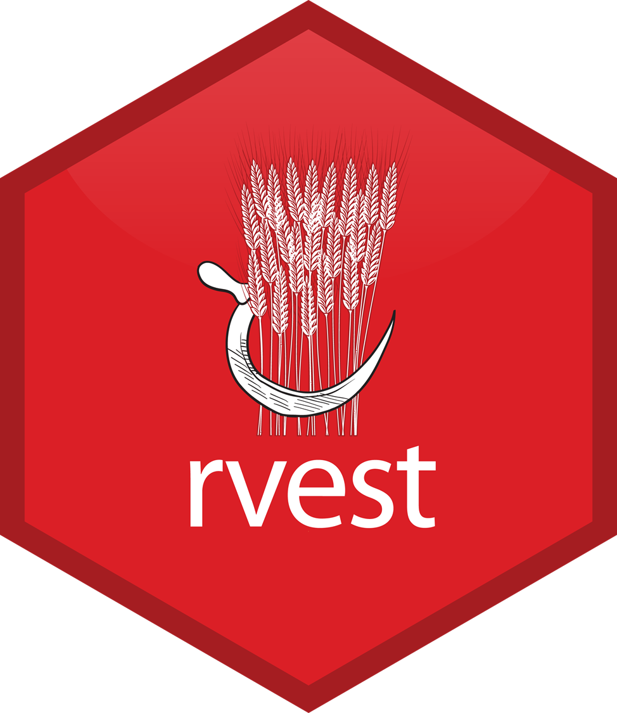

Data Collection
Sang-Il Lee
Collecting Data from Files on the Web


readr package
# A tibble: 6 × 5
`Student ID` `Full Name` favourite.food mealPlan AGE
<dbl> <chr> <chr> <chr> <chr>
1 1 Sunil Huffmann Strawberry yoghurt Lunch only 4
2 2 Barclay Lynn French fries Lunch only 5
3 3 Jayendra Lyne N/A Breakfast and lunch 7
4 4 Leon Rossini Anchovies Lunch only <NA>
5 5 Chidiegwu Dunkel Pizza Breakfast and lunch five
6 6 Güvenç Attila Ice cream Lunch only 6
openxlsx package
Var1 Var2 Var3 Var4 Var5 Var6 Var7
1 TRUE 1 1.00 a 42042 3209324 This NA
2 TRUE NA NA b 42041 <NA> NA
3 TRUE 2 1.34 c 42040 <NA> NA
4 FALSE 2 NA <NA> NA <NA> NA
5 FALSE 3 1.56 e NA <NA> NA
6 FALSE 1 1.70 f 42037 <NA> NA
7 NA NA NA <NA> 42036 <NA> NA
8 FALSE 2 23.00 h 42035 <NA> NA
9 FALSE 3 67.30 i 42034 <NA> NA
10 NA 1 123.00 <NA> 42033 <NA> NA
googlesheet4 package
# A tibble: 624 × 6
country continent year lifeExp pop gdpPercap
<chr> <chr> <dbl> <dbl> <dbl> <dbl>
1 Algeria Africa 1952 43.1 9279525 2449.
2 Algeria Africa 1957 45.7 10270856 3014.
3 Algeria Africa 1962 48.3 11000948 2551.
4 Algeria Africa 1967 51.4 12760499 3247.
5 Algeria Africa 1972 54.5 14760787 4183.
6 Algeria Africa 1977 58.0 17152804 4910.
7 Algeria Africa 1982 61.4 20033753 5745.
8 Algeria Africa 1987 65.8 23254956 5681.
9 Algeria Africa 1992 67.7 26298373 5023.
10 Algeria Africa 1997 69.2 29072015 4797.
# ℹ 614 more rowsWeb Scraping
rvest package
Example 1: Website
Example 1: Title
[1] "The Phantom Menace" "Attack of the Clones"
[3] "Revenge of the Sith" "A New Hope"
[5] "The Empire Strikes Back" "Return of the Jedi"
[7] "The Force Awakens" Example 1: All together
section <- read_html(url) |>
html_elements("section")
tibble(
title = section |>
html_element("h2") |>
html_text2(),
released = section |>
html_element("p") |>
html_text2() |>
str_remove("Released: ") |>
parse_date(),
director = section |>
html_element(".director") |>
html_text2(),
intro = section |>
html_element(".crawl") |>
html_text2()
)# A tibble: 7 × 4
title released director intro
<chr> <date> <chr> <chr>
1 The Phantom Menace 1999-05-19 George Lucas "Turmoil has engulfed the…
2 Attack of the Clones 2002-05-16 George Lucas "There is unrest in the G…
3 Revenge of the Sith 2005-05-19 George Lucas "War! The Republic is cru…
4 A New Hope 1977-05-25 George Lucas "It is a period of civil …
5 The Empire Strikes Back 1980-05-17 Irvin Kershner "It is a dark time for th…
6 Return of the Jedi 1983-05-25 Richard Marquand "Luke Skywalker has retur…
7 The Force Awakens 2015-12-11 J. J. Abrams "Luke Skywalker has vanis…Example 2: Naver news
Example 2: Naver news
# A tibble: 10 × 2
title contents
<chr> <chr>
1 지자체 교부세 산정 때 '생활인구' 반영…지방소멸 대응 강화 "한순기 …
2 강원교육청, 지방소멸 대응 농어촌 교육발전 지역협의회 개최 "강원특별…
3 “의료 취약지일수록 소멸 위험 높아…‘의료 자치’ 강화해야” "참가자들…
4 다큐온, 지역소멸 대응정책의 패러다임 '매력, 지방을 살린다' "의성군은…
5 [지방소멸 경고등] 양파·마늘·노인만 많은 창녕…생활인구로 활력 모... "이에 창…
6 [사설] 거주에서 체류로…지방 소멸 해법 달라져야 "이는 최…
7 “의성 마늘농장선 80대가 12시간 밭일 합니다”…일손 소멸 이정도라니 "산후조리…
8 지방행정체제 개편은?…대전시·미래위, 충청권 의견수렴 "지방행정…
9 광주시의회 '지방의회법' 제정 건의안 의결 "신수정 …
10 지방 발전 없이는 반도체 강국도 없다 "그러나 … API
httr2 package

Example: Naver news
NAVER Developer (https://developers.naver.com/main/)
-
[Products]-[서비스 API]-[검색] (https://developers.naver.com/products/service-api/search/search.md)
오픈 API 이용 신청
개발 가이드 보기
-
오픈 API 이용 신청
애플리케이션 이름
-
비로그인 오픈 API 서비스 환경
WEB 설정
웹 서비스 URL: http://localhost
Example: Naver news
library(httr2)
search <- "지방소멸"
your_url <- "https://openapi.naver.com/v1/search/news.json"
result_naver <- request(your_url) |>
req_headers(
"X-Naver-Client-ID" = your_ClientID,
"X-Naver-Client-Secret" = your_Client_Secret
) |>
req_url_query(
query = search,
display = 100,
start = 1,
sort = "date"
) |>
req_perform() |>
resp_body_json()
naver_data <- data.frame(t(sapply(result_naver$items, data.frame)))
naver_data title
1 [기고] 동두천, 다섯 쌍둥이 탄생과 인구 감소 극복의 새로운 길
2 밀양시의회, ‘쌀값 정상화 대책 마련’ 정부 건의문 채택
3 “한강 효과? 하루 열 명도 안 와요"…사라지는 동네 서점
4 [금주 금융권 주요기사] 4대 금융, 3분기 순이익 5조원 '육박'... 윤 대통...
5 [<b>지방소멸</b> 경고등] 양파·마늘·노인만 많은 창녕…생활인구로 활력 모...
6 "주민들 연 80만원 넘게 준대"…이 섬에 사람들이 몰려왔다
7 다큐온, 지역<b>소멸</b> 대응정책의 패러다임 '매력, <b>지방</b>을 살린다'
8 동구, <b>지방</b> 시대의 해법 모색…지역 정주형 인재 양성 논의
9 작년 '과태료 미납 차량 압류' 238만건…"번호판 영치 경찰 인력 부족"
10 조상래 곡성군수, 취임 보름만에 공약 추진사업 점검
11 "닥터바리스타 방탄커피" 등 11월2일 전체 캐시워크 돈버는퀴즈 문제+정...
12 <b>지방</b> 시대 흐름 맞춘 디자인 전략, 지역 상생과 균형 발전의 길 찾는다
13 [로컬의 발견] 동네의 내일을 바꾸는 사람들
14 <b>지방 소멸</b> 韓, 돌파구 찾은 日…<b>지방 소멸</b> 위기 극복 대책은[KBS 다큐ON]
15 '지옥에서 온 판사' 박신혜, 이규한 사형 선고→김재영과 입맞춤 후 사...
16 “사랑했다” 박신혜, ♥김재영과 첫키스→마지막 인사..결국 사망 (‘지...
17 "내 인생 유일한 오점이자 약점"… '지옥에서온판사' 박신혜, 사랑하는...
18 밀양시의회, "쌀값 정상화 대책 마련 촉구...대정부 건의문 채택"
19 “의료 취약지일수록 <b>소멸</b> 위험 높아…‘의료 자치’ 강화해야”
20 행정통합 첫 대구 시민 설명회…“주민투표해야”
21 21호 태풍 콩레이, 중국서 <b>소멸</b>…한국 날씨-비 강수량 보니
22 균형발전 위한 행정통합"중앙권한 이양 필수"
23 출산율 높은 지자체, 교부세 더 받는다
24 밀어올린 수증기에…제주 11월 역대 최다 강수량
25 [날씨] 제주 밤사이 호우…다음 주 기온 뚝↓
26 대전시-미래위, <b>지방</b>행정체제 개편 충청권 토론회
27 “광역 통합으로 균형발전…정부 지원 필요”
28 “의료 취약지일수록 <b>소멸</b> 위험 높아…‘의료 자치’ 강화해야”
29 행정통합 첫 대구 시민 설명회…“주민투표해야”
30 출산율 높은 지자체에 '교부세' 더 준다
31 양산시, 읍면동 순회간담회 건의사항 추진상황 점검
32 강원교육청, <b>지방소멸</b> 대응 농어촌 교육발전 지역협의회 개최
33 <b>지방</b>행정체제 개편은?…대전시·미래위, 충청권 의견수렴
34 충북도의회 정례회 개회…김수민 부지사 데뷔전
35 광주시의회 ‘<b>지방</b>의회법 제정’ 촉구 건의
36 <b>지방</b>분권전국회의, "균형발전 위해 부산경남 행정통합 등 분권형 광역지...
37 야박한 시골 인심에 농업이 멍든다
38 [농업·농촌의 길] "지역<b>소멸</b> 대응 농업법인 육성" "농지 이용방식 전환...
39 단양군의회, '시내버스 무료화' 연구용역 '진행중'
40 조상래 곡성군수 취임 후 첫 업무 보고 진행
41 은행 점포, 5년 전보다 20% 감소…금융당국 ‘은행 대리업’ 카드 고심
42 [날씨] 제주 11월 역대 최다 강수량…내일까지 많은 비
43 경북 북부권 시·군의회 '행정통합 반대' 목소리 잇따라
44 강원 고성군, '화진포 국가 해양 생태공원 토론회' 5일 개최
45 TK행정통합 주민설명회 첫 스타트…남구 "미군부대 이전할 수 있나?"
46 JB금융지주, 2분기 연속 어닝서프라이즈…사상 최대 순이익 기대
47 대전시·행안부 미래위, <b>지방</b>행정체제 개편 충청권 의견수렴 토론회
48 광주시의회 '<b>지방</b>의회법' 제정 건의안 의결
49 대전시·미래위, <b>지방</b> 행정체제 개편 의견수렴 충청권 토론회
50 대구시, 5일까지 ‘TK행정통합’ 구·군 릴레이 설명회
51 고성군, 화진포 국가해양생태공원 토론회 개최
52 밀양시의회, 제259회 임시회 개회
53 ㈜피더블유에스그룹, 가톨릭대·영산대와 함께 “초광역 지산학 동반성...
54 "메가아젠다연구 어떻게 할 것인가"...한인사, 국회토론회 열린다
55 TK통합, 부울경공동체…영남 지자체들 통합논의 분주
56 '인구감소 극복' 공주시, 올해 도내 생활인구 가장 많아
57 대전시-미래위, '<b>지방소멸</b> 시대' 행정개편 목소리 모아
58 [위클리오늘] 강원도교육청, 2024년 강원특별자치도 농어촌 교육발전 지...
59 공주시, 올해 상반기 생활인구 '충남 1위'
60 4대 금융지주 회장들, 저출생 위기 극복 앞장
61 [기획] 부산진해경제자유구역청, 명지지구 ‘AI산업 메카’로 조성
62 영양교육지원청, 영양군 교육행정협의회 개최
63 광주광역시의회, <b>지방</b>의회법제정 촉구 건의
64 강원교육청, 2024년 강원자치도 농어촌 교육발전 지역협의회 개최
65 "쌀값 정상화 대책을" 경남 밀양시의회, 대정부 건의문 채택
66 제주도 <b>지방</b>시대위원회 워크숍 개최...'2035 탄소중립' 비전 공유
67 대구대·계명문화대·대구과학대·대구한의대 [대학소식]
68 <b>지방</b>의회 자주성과 독립성 확보를 위한 광주광역시의회,「<b>지방</b>의회법」...
69 광주시의회, '예산 독립' <b>지방</b>의회법 제정 건의
70 저출생·<b>지방소멸</b> 위기 대응 위해 지방교부세 역할 확대·강화
71 부산 시민단체 "균형발전 위해 분권형 광역<b>지방</b>정부 구축해야"
72 영양군 교육행정협의회 갖고 '교육 현안 논의'
73 광주시의회, <b>지방</b>의회 자주·독립성 확보 위한 '<b>지방</b> 의회법' 제정 건의
74 지자체 교부세 산정 때 ‘생활인구’ 반영…<b>지방소멸</b> 대응 강화
75 대전시, <b>지방소멸</b> 대응…충청권 행정개편 논의 활발
76 곡성군, 조상래 군수 취임 후 첫 업무 보고 진행
77 조상래 곡성군수, 취임 후 첫 업무보고회…공약·주요 현안 챙겨
78 공주시, 올 상반기 생활인구 '충남 1위'
79 광주시의회 '<b>지방</b>의회법' 제정 촉구…"자주성·독립성 확보"
80 공주시, 올 상반기 생활인구 ‘충남 1위’
81 강원도교육청, 2024년 농어촌 교육발전 지역협의회 개최
82 동두천시, 평화로 경로당 개소식 개최
83 강원도, 농어촌 교육발전 지역협의회 개최
84 공주시, 충남도내 생활인구 1위…"체류 인구로 지역경제 효과"
85 [김세원의 복지이야기] 댁의 고향은 안녕하십니까?
86 공주시, 올 상반기 생활인구 '충남 1위'
87 지자체 교부세 산정 때 ‘생활인구’ 반영…<b>지방소멸</b> 대응 강화
88 대만 강타한 슈퍼태풍 '콩레이'…세력 약해졌지만 한반도에 '강한 비'
89 광주광역시의회, '<b>지방</b>의회법' 제정 촉구 건의
90 대통령실 정진석 "오직 국민만···민생과 직결된 4대 개혁 추진에 박차...
91 정진석 "오직 국민만 바라볼 것…4대 개혁·저출산 극복 성과 위해 박차...
92 공주시, 충남도 인구감소지역 중 생활인구 1위…맞춤형 인구정책 성과 ...
93 동두천시, 평화로 경로당 개소식 개최
94 관광객 오래 머무는 지자체에 교부액 더 준다
95 [국감] 대통령실 "4대 개혁과제 추진 박차…어려운 체감경기는 뼈아파"
96 올 상반기 생활 인구 충남 1위는? 공주!
97 [무등의 아침] “정부 재정 지원으로 도시가스 보급률 높여야”
98 공주시 2분기 생활인구, 월평균 69만7960명…충남서 1위
99 통영시, "특색 있는 맞춤형 인구 정책 펼쳐나갈 것"
100 인문사회연구소협의회 ‘국가 복합위기 해결’ 국회 토론회 개최
originallink
1 https://www.nbntv.co.kr/news/articleView.html?idxno=3027482
2 https://www.pressian.com/pages/articles/2024110118101969667?utm_source=naver&utm_medium=search
3 https://www.sentv.co.kr/article/view/sentv202411010090
4 https://www.youthdaily.co.kr/news/article.html?no=169349
5 https://www.yna.co.kr/view/AKR20241029106500052?input=1195m
6 http://news.mt.co.kr/mtview.php?no=2024110115033217577
7 https://www.lecturernews.com/news/articleView.html?idxno=165083
8 https://www.ccdailynews.com/news/articleView.html?idxno=2305512
9 https://www.newsis.com/view/NISX20241101_0002943553
10 http://www.segye.com/newsView/20241101504142?OutUrl=naver
11 http://www.economytalk.kr/news/articleView.html?idxno=267215
12 https://www.ccdailynews.com/news/articleView.html?idxno=2305511
13 https://www.kmib.co.kr/article/view.asp?arcid=1730276185&code=11171467&cp=nv
14 https://news.heraldcorp.com/view.php?ud=20241101050662
15 http://www.stoo.com/article.php?aid=97107212050
16 http://www.osen.co.kr/article/G1112449406
17 https://www.topstarnews.net/news/articleView.html?idxno=15565975
18 http://www.fntoday.co.kr/news/articleView.html?idxno=338061
19 https://news.kbs.co.kr/news/pc/view/view.do?ncd=8096523&ref=A
20 https://news.kbs.co.kr/news/pc/view/view.do?ncd=8096515&ref=A
21 https://www.topstarnews.net/news/articleView.html?idxno=15565925
22 https://busanmbc.co.kr/01_new/new01_view.asp?idx=268867
23 https://www.chosun.com/national/national_general/2024/11/01/RGL2K6YUKRE63LGQEBISCC7HNE/?utm_source=naver&utm_medium=referral&utm_campaign=naver-news
24 https://news.sbs.co.kr/news/endPage.do?news_id=N1007857340&plink=ORI&cooper=NAVER
25 http://www.mbn.co.kr/pages/news/newsView.php?news_seq_no=5068878
26 https://www.dailysportshankook.co.kr/news/articleView.html?idxno=337467
27 https://news.kbs.co.kr/news/pc/view/view.do?ncd=8096445&ref=A
28 https://news.kbs.co.kr/news/pc/view/view.do?ncd=8096444&ref=A
29 https://news.kbs.co.kr/news/pc/view/view.do?ncd=8096437&ref=A
30 https://www.hankyung.com/article/2024110153971
31 https://view.asiae.co.kr/article/2024110118273607984
32 https://www.news1.kr/local/kangwon/5587602
33 https://www.newsis.com/view/NISX20241101_0002943671
34 https://www.newsis.com/view/NISX20241101_0002943701
35 http://www.jnilbo.com/75278171606
36 https://www.sisamagazine.co.kr/news/articleView.html?idxno=508253
37 http://www.agrinet.co.kr/news/articleView.html?idxno=332007
38 http://www.agrinet.co.kr/news/articleView.html?idxno=332011
39 https://www.ccdailynews.com/news/articleView.html?idxno=2305492
40 http://www.inews24.com/view/1778593
41 https://www.ceoscoredaily.com/page/view/2024110115111736796
42 https://news.sbs.co.kr/news/endPage.do?news_id=N1007857103&plink=ORI&cooper=NAVER
43 https://srn.hcn.co.kr/user/news/BD_newsView.do?news_category=01&story_id=NS2024110100019&story_seq=0&soCode=114&socttSn=NS2024110100019&socttSeq=0
44 https://www.yna.co.kr/view/AKR20241101135000062?input=1195m
45 https://www.yeongnam.com/web/view.php?key=20241101010000096
46 https://weekly.cnbnews.com/news/article.html?no=164511
47 http://www.chungnamilbo.co.kr/news/articleView.html?idxno=797590
48 https://news.mtn.co.kr/news-detail/2024110115220296037
49 https://www.news1.kr/local/daejeon-chungnam/5587412
50 https://www.seoul.co.kr/news/politics/2024/11/01/20241101500179?wlog_tag3=naver
51 https://www.jeonmae.co.kr/news/articleView.html?idxno=1088331
52 https://www.newsfreezone.co.kr/news/articleView.html?idxno=594025
53 https://idsn.co.kr/news/view/1065592567561004
54 http://www.kyosu.net/news/articleView.html?idxno=126793
55 https://www.kmib.co.kr/article/view.asp?arcid=0020682536&code=61121111&cp=nv
56 http://www.dtnews24.com/news/articleView.html?idxno=781032
57 https://www.newspim.com/news/view/20241101000874
58 http://www.weeklytoday.com/news/articleView.html?idxno=659871
59 http://news.tf.co.kr/read/national/2147219.htm
60 http://www.wsobi.com/news/articleView.html?idxno=258613
61 http://www.g-enews.com/ko-kr/news/article/news_all/20241101113548754137f21df127_1/article.html
62 http://www.metroseoul.co.kr/article/20241101500040
63 https://www.psnews.co.kr/news/articleView.html?idxno=2071380
64 https://www.sportsseoul.com/news/read/1473881?ref=naver
65 https://www.newsis.com/view/NISX20241101_0002943249
66 http://www.headlinejeju.co.kr/news/articleView.html?idxno=556190
67 https://www.kukinews.com/article/view/kuk202411010124
68 https://www.job-post.co.kr/news/articleView.html?idxno=118422
69 https://www.yna.co.kr/view/AKR20241101103200054?input=1195m
70 https://www.korea.kr/news/policyNewsView.do?newsId=148935751&call_from=naver_news
71 https://www.news1.kr/local/busan-gyeongnam/5587215
72 https://daily.hankooki.com/news/articleView.html?idxno=1143218
73 https://www.nocutnews.co.kr/news/6237441?utm_source=naver&utm_medium=article&utm_campaign=20241101022545
74 http://www.edaily.co.kr/news/newspath.asp?newsid=03611286639081456
75 https://www.ccdailynews.com/news/articleView.html?idxno=2305373
76 https://www.pressian.com/pages/articles/2024110114000348097?utm_source=naver&utm_medium=search
77 http://news.tf.co.kr/read/national/2147147.htm
78 http://www.newstnt.com/news/articleView.html?idxno=426554
79 https://www.news1.kr/local/gwangju-jeonnam/5587152
80 https://www.ekn.kr/web/view.php?key=20241101020194975
81 https://www.ajunews.com/view/20241101125436319
82 https://www.startuptoday.co.kr/news/articleView.html?idxno=362229
83 http://www.shinailbo.co.kr/news/articleView.html?idxno=1954282
84 https://cc.newdaily.co.kr/site/data/html/2024/11/01/2024110100135.html
85 https://www.goodmorningcc.com/news/articleView.html?idxno=407627
86 http://www.ccnnews.co.kr/news/articleView.html?idxno=351784
87 https://news.kbs.co.kr/news/pc/view/view.do?ncd=8096201&ref=A
88 https://www.newstree.kr/newsView/ntr202411010012
89 http://www.newsworker.co.kr/news/articleView.html?idxno=354070
90 http://www.sisafocus.co.kr/news/articleView.html?idxno=327167
91 https://www.dailian.co.kr/news/view/1424125/?sc=Naver
92 https://www.discoverynews.kr/news/articleView.html?idxno=1052616
93 https://www.dnews.co.kr/uhtml/view.jsp?idxno=202411011129142010241
94 https://www.munhwa.com/news/view.html?no=2024110101031227163001
95 https://www.newspim.com/news/view/20241101000484
96 https://www.goodmorningcc.com/news/articleView.html?idxno=407625
97 https://news.kbs.co.kr/news/pc/view/view.do?ncd=8096140&ref=A
98 https://www.newsis.com/view/NISX20241101_0002942959
99 http://www.enewstoday.co.kr/news/articleView.html?idxno=2194351
100 https://www.kukinews.com/article/view/kuk202411010035
link
1 https://www.nbntv.co.kr/news/articleView.html?idxno=3027482
2 https://n.news.naver.com/mnews/article/002/0002357509?sid=102
3 https://www.sentv.co.kr/article/view/sentv202411010090
4 https://www.youthdaily.co.kr/news/article.html?no=169349
5 https://n.news.naver.com/mnews/article/001/0015021884?sid=102
6 https://n.news.naver.com/mnews/article/008/0005108997?sid=101
7 https://www.lecturernews.com/news/articleView.html?idxno=165083
8 https://www.ccdailynews.com/news/articleView.html?idxno=2305512
9 https://n.news.naver.com/mnews/article/003/0012880190?sid=102
10 https://n.news.naver.com/mnews/article/022/0003982058?sid=102
11 http://www.economytalk.kr/news/articleView.html?idxno=267215
12 https://www.ccdailynews.com/news/articleView.html?idxno=2305511
13 https://n.news.naver.com/mnews/article/005/0001735726?sid=110
14 https://n.news.naver.com/mnews/article/016/0002382490?sid=103
15 http://www.stoo.com/article.php?aid=97107212050
16 https://m.entertain.naver.com/article/109/0005188292
17 https://www.topstarnews.net/news/articleView.html?idxno=15565975
18 http://www.fntoday.co.kr/news/articleView.html?idxno=338061
19 https://n.news.naver.com/mnews/article/056/0011830383?sid=102
20 https://n.news.naver.com/mnews/article/056/0011830332?sid=102
21 https://www.topstarnews.net/news/articleView.html?idxno=15565925
22 https://busanmbc.co.kr/01_new/new01_view.asp?idx=268867
23 https://n.news.naver.com/mnews/article/023/0003867764?sid=102
24 https://n.news.naver.com/mnews/article/055/0001202631?sid=102
25 https://n.news.naver.com/mnews/article/057/0001850996?sid=103
26 https://www.dailysportshankook.co.kr/news/articleView.html?idxno=337467
27 https://n.news.naver.com/mnews/article/056/0011830259?sid=101
28 https://n.news.naver.com/mnews/article/056/0011830292?sid=102
29 https://n.news.naver.com/mnews/article/056/0011830263?sid=102
30 https://n.news.naver.com/mnews/article/015/0005052112?sid=102
31 https://n.news.naver.com/mnews/article/277/0005493909?sid=102
32 https://n.news.naver.com/mnews/article/421/0007882771?sid=102
33 https://n.news.naver.com/mnews/article/003/0012879850?sid=102
34 https://n.news.naver.com/mnews/article/003/0012879841?sid=102
35 http://www.jnilbo.com/75278171606
36 https://www.sisamagazine.co.kr/news/articleView.html?idxno=508253
37 http://www.agrinet.co.kr/news/articleView.html?idxno=332007
38 http://www.agrinet.co.kr/news/articleView.html?idxno=332011
39 https://www.ccdailynews.com/news/articleView.html?idxno=2305492
40 https://n.news.naver.com/mnews/article/031/0000881414?sid=102
41 https://www.ceoscoredaily.com/page/view/2024110115111736796
42 https://n.news.naver.com/mnews/article/055/0001202586?sid=103
43 https://srn.hcn.co.kr/user/news/BD_newsView.do?news_category=01&story_id=NS2024110100019&story_seq=0&soCode=114&socttSn=NS2024110100019&socttSeq=0
44 https://n.news.naver.com/mnews/article/001/0015021351?sid=102
45 https://www.yeongnam.com/web/view.php?key=20241101010000096
46 https://weekly.cnbnews.com/news/article.html?no=164511
47 http://www.chungnamilbo.co.kr/news/articleView.html?idxno=797590
48 https://news.mtn.co.kr/news-detail/2024110115220296037
49 https://n.news.naver.com/mnews/article/421/0007882579?sid=102
50 https://n.news.naver.com/mnews/article/081/0003491805?sid=100
51 https://www.jeonmae.co.kr/news/articleView.html?idxno=1088331
52 https://www.newsfreezone.co.kr/news/articleView.html?idxno=594025
53 https://idsn.co.kr/news/view/1065592567561004
54 http://www.kyosu.net/news/articleView.html?idxno=126793
55 https://n.news.naver.com/mnews/article/005/0001735675?sid=102
56 http://www.dtnews24.com/news/articleView.html?idxno=781032
57 https://www.newspim.com/news/view/20241101000874
58 http://www.weeklytoday.com/news/articleView.html?idxno=659871
59 https://n.news.naver.com/mnews/article/629/0000334360?sid=102
60 http://www.wsobi.com/news/articleView.html?idxno=258613
61 http://www.g-enews.com/ko-kr/news/article/news_all/20241101113548754137f21df127_1/article.html
62 http://www.metroseoul.co.kr/article/20241101500040
63 https://www.psnews.co.kr/news/articleView.html?idxno=2071380
64 https://n.news.naver.com/mnews/article/468/0001105188?sid=102
65 https://n.news.naver.com/mnews/article/003/0012879305?sid=102
66 http://www.headlinejeju.co.kr/news/articleView.html?idxno=556190
67 https://www.kukinews.com/article/view/kuk202411010124
68 https://www.job-post.co.kr/news/articleView.html?idxno=118422
69 https://n.news.naver.com/mnews/article/001/0015020866?sid=100
70 https://www.korea.kr/news/policyNewsView.do?newsId=148935751&call_from=naver_news
71 https://n.news.naver.com/mnews/article/421/0007882271?sid=102
72 https://daily.hankooki.com/news/articleView.html?idxno=1143218
73 https://n.news.naver.com/mnews/article/079/0003954410?sid=102
74 https://n.news.naver.com/mnews/article/018/0005874727?sid=100
75 https://www.ccdailynews.com/news/articleView.html?idxno=2305373
76 https://n.news.naver.com/mnews/article/002/0002357428?sid=102
77 https://n.news.naver.com/mnews/article/629/0000334288?sid=102
78 http://www.newstnt.com/news/articleView.html?idxno=426554
79 https://n.news.naver.com/mnews/article/421/0007882177?sid=102
80 https://www.ekn.kr/web/view.php?key=20241101020194975
81 https://www.ajunews.com/view/20241101125436319
82 https://www.startuptoday.co.kr/news/articleView.html?idxno=362229
83 http://www.shinailbo.co.kr/news/articleView.html?idxno=1954282
84 https://cc.newdaily.co.kr/site/data/html/2024/11/01/2024110100135.html
85 https://www.goodmorningcc.com/news/articleView.html?idxno=407627
86 http://www.ccnnews.co.kr/news/articleView.html?idxno=351784
87 https://n.news.naver.com/mnews/article/056/0011830088?sid=102
88 https://www.newstree.kr/newsView/ntr202411010012
89 http://www.newsworker.co.kr/news/articleView.html?idxno=354070
90 http://www.sisafocus.co.kr/news/articleView.html?idxno=327167
91 https://n.news.naver.com/mnews/article/119/0002888165?sid=100
92 https://www.discoverynews.kr/news/articleView.html?idxno=1052616
93 https://www.dnews.co.kr/uhtml/view.jsp?idxno=202411011129142010241
94 https://n.news.naver.com/mnews/article/021/0002669062?sid=102
95 https://www.newspim.com/news/view/20241101000484
96 https://www.goodmorningcc.com/news/articleView.html?idxno=407625
97 https://n.news.naver.com/mnews/article/056/0011830035?sid=101
98 https://n.news.naver.com/mnews/article/003/0012878781?sid=102
99 http://www.enewstoday.co.kr/news/articleView.html?idxno=2194351
100 https://www.kukinews.com/article/view/kuk202411010035
description
1 <b>지방 소멸</b> 위기가 현실로 다가오는 현시점에서 중앙정부의 협력과 선제적 대응의 중요성도 강조하며, 박 시장은 다섯 쌍둥이의 탄생을 출발점으로 삼아 지역 발전의 새로운 방향을 제시한다. 다음은 기고문 전문이다....
2 또한 “농업·농촌의 위기는 이미 한계점에 달했으며, 이대로라면 인구 및 <b>지방 소멸</b>의 비극은 농촌에서 제일 먼저 일어나게 될 것이 너무나 자명하다”고 강조했다. 밀양시의회는 쌀값 정상화를 위해 정부의 쌀값 20만...
3 올해 기준 서점이 하나도 없는 <b>지방</b>자치단체(시군구)는 10곳으로 2년 사이 3개가 늘었다. 서점이 한 곳뿐인 서점 <b>소멸</b> 예정 지역도 25곳인 것으로 드러났다. 반면 대형 체인 서점은 늘어나고 있다. 교보문고, 영풍문고...
4 아울러 인구<b>소멸</b>지역 등 <b>지방</b> 점포들이 없어지고, 금융 접근성이 낮아진다는 우려에 대응해 금융당국은 은행대리업 도입을 추진. 김 위원장은 "결제부분은 위탁 형식으로 허용되는 부분이 있지만, 대출위탁 부분은...
5 이에 창녕군은 생활인구 유입 외에도 지역 내 11개 산업단지 근무자를 현재 4천596명에서 더 확충하는 등 <b>지방소멸</b> 위기 극복에 총력을 쏟는다. 양파 시배지여서 양파(520㏊)와 마늘(3천485㏊) 재배농가가 많은 지역특성을...
6 <b>지방</b>자치단체 차원의 정책이 있었다. 신안군은 2018년 '신·재생에너지 개발이익 공유 등에 관한 조례'를... 이후 조례를 17번 개정해 인구<b>소멸</b>과 지역경제 활성화를 꾀하기 위한 방향으로 제도를 진화시켜 왔다....
7 의성군은 <b>지방소멸</b>지수 1위 지역이다. 만약 한국에서 사라지는 지자체가 있다면 의성군이 첫 번째라는 뜻이다. 그만큼 시급히 지역소멸에 대응해야 했고 그래서 '이웃사촌시범마을' 사업을 시작했다. 청년들이 살 수 있는...
8 지역 <b>소멸</b>에 대비한 인재 양성의 필요성과 이를 위한 대학과 지자체의 협력 방안을 강조했다. ▲ 동구포럼 참석자들 모습. 사진 가운데 박희조 동구청장 박 교수는 "인구<b>소멸</b> 시대에서 지역이 생존하고 발전하려면 지역에...
9 이는 가장 강력한 조치인데, <b>지방</b>자치단체 공무원이 차량 번호판을 떼어갈 때까지 과태료를 내지 않고... 경찰 관계자는 "전국 경찰서에서 과태료 업무를 담당하는 경찰이 462명인데, 독촉장을 보내고 납부 <b>소멸</b>시효를...
10 주요 논의사업은 <b>지방소멸</b>대응기금 운영, 주거환경 개선사업, 곡성스테이션1928 운영 & 돌아오지촌 조성사업, 축산악취개선사업, 곡성토란도란 농촌융복합산업지구 조성사업 등이다. 여기에 전 군민 무료 버스 운행...
11 두번째 문제는 "설탕ZERO 포만감100% 닥터바리스타 방탄커피는 OOOO은 줄이고 건강한 <b>지방</b>으로 채워 포만감을... 모두가 걱정하는 개인정보 보호를 위해 임시로 생성되고 <b>소멸</b>되는 OOOO를 만들어 번호를 입력한 사람끼리...
12 지난 10월 30일 옛 충남도청 대회의실에서 개최된 토론회에서 한국공공디자인학회 최성호 회장은 "<b>지방</b> 시대... 김병옥 기용건축 대표는 <b>소멸</b> 위기에 처한 지역에 도서관과 커뮤니티 공간을 설계해 지역 사회에 활력을...
13 얼마 전 농림축산식품부가 주최한 행사에 <b>지방 소멸</b> 관련 토론자로 참석했는데, 토론자 중 한 명이 ‘세계에서 가장 아름다운 편의점’이라는 별명을 가진 일본 미라이편의점을 만든 후지타 야스시씨였다. 한국의 지역...
14 한국의 지방에서도 <b>지방소멸</b> 위기극복방안을 내놓고 있지만, 아직 성과는 미미한 편이다. 이 프로그램은 보다 많은 사람들이 시청해 공감의 시간을 가지길 바라고 있다. 지방이 사라지고 있다. 전국 229개 기초자치단체 중...
15 난 비록 <b>소멸</b>하지만 내 부하들이 언젠가 은혜를 갚을 거야"라고 부탁했다. 자신의 죽음을 직감한 강빛나는... 한다온은 강빛나가 <b>지방</b> 발령을 받았다고 생각해 "괜찮다. 내가 자주 가면 되죠"라고 말했다. 강빛나는...
16 난 비록 <b>소멸</b>하지만 내 부하들이 언젠가 은혜를 갚을 거야”라고 부탁했다. 그렇게 시간을 벌인 강빛나는... <b>지방</b> 발령인 줄 알고 있는 한다온은 “괜찮다. 내가 자주 가면 되죠”라고 했고, 강빛나는 그런 한다온 손을...
17 가브리엘 오미자(김영옥 분)는 강빛나의 <b>소멸</b>을 걱정해 "정태규를 풀어주고 처단해라"고 조언했다. 그러나... 강빛나는 "내가 멀리 떠나게 됐다"고 했지만, 한다온은 "<b>지방</b>발령 이야기하는 거냐. 괜찮다. 내가 자주 가겠다"고...
18 또한, 농업·농촌의 위기는 이미 한계점에 달했으며, 이대로라면 인구 및 <b>지방 소멸</b>의 비극은 농촌에서 제일 먼저 일어나게 될 것이 너무나 자명하다고 재차 강조했다. 밀양시의회는 쌀값 정상화를 위해 정부의 쌀값...
19 참가자들은 특히, <b>지방소멸</b>이 지역 공공의료 붕괴와 맞닿아있다는 데에 주목했습니다. 발제자로 나선 충북대의대 박종혁 교수는 충북의 의료취약지수와 인구소멸지수 관계를 따진 결과, 강한 상관관계를 의미하는 -1에...
20 만약에 이게 통합이 안 된다면 2045년도는 어떻게 내다보고 있습니까?"] 대구시는 통합은 정부 권한을 대거 넘겨받아, <b>지방소멸</b>의 추세를 바꿀 유일한 길이라고 강조했습니다. 다만, 주민 투표에 대해선 부정적인 입장을...
21 21호 태풍 콩레이가 중국서 <b>소멸</b>한다. 1일 오후 4시 기상청 발표에 따르면, 21호 태풍 콩레이는 이날 오후... 1일 오후 5시 기상청 발표에 따르면, 한국은 내일 오전까지 남부<b>지방</b>과 제주도를 중심으로 비가...
22 부산MBC)<b>지방</b>분권 균형발전 부산시민연대는,부산시의회에서 기자회견을 열고,지역<b>소멸</b>을 막기위해서는, <b>지방</b>권한을 강화해야 한다고 밝혔습니다.중앙정부가 행정권한과 예산권을 틀어쥐고,<b>지방</b>정부는 공모사업 등을...
23 앞으로 출산율이 높은 <b>지방</b>자치단체는 정부에서 나눠주는 교부세를 더 많이 받을 수 있게 된다. 전국 89개... 지역 <b>소멸</b> 위기에 놓인 전국 89개 인구 감소 지역의 경우, 교부세 계산 기준에 ‘생활 인구’를 넣기로 했다....
24 북진하다가 밤사이 중국 남부 해상에서 <b>소멸</b>할 전망이라 한반도에 직접적인 영향은 주지 않지만, 반시계 방향으로 회전하기 때문에 수증기를 밀어 올린다는 게 문제입니다. 제주도와 남부 <b>지방</b>에 비를 뿌리는 겁니다....
25 21호 태풍 콩레이는 내일 새벽 무렵 상하이 남동쪽 해상에서 <b>소멸</b>할 것으로 예상합니다. 단, 이 태풍의... 낮 기온은 크게 올라서, 중부<b>지방</b> 서울과 대전이 23도로 온화하겠습니다. 남부<b>지방</b>은 부산이 22도, 광주는...
26 지방행정체제는 1995년 민선 자치 출범 이후 인구감소·<b>지방소멸</b>, 행정구역과 생활권 불일치 등 급격한 행정환경의 변화에 대응하지 못한다는 지적이 있었다. 이에, 지난 5월 행정안전부는 민선 자치 30주년을 맞아 정부...
27 <b>지방</b>분권전국회의는 "저출생과 고령화, 지역 <b>소멸</b> 등의 위기에 대처하기 위해서는 '수도권 집중'을 해소해야 한다"며 "부산·경남 등에서 추진 중인 '광역 통합'이 제대로 논의될 수 있도록 정부가 나서 공론화하고 지원해야...
28 참가자들은 특히, <b>지방소멸</b>이 지역 공공의료 붕괴와 맞닿아있다는 데에 주목했습니다. 발제자로 나선 충북대의대 박종혁 교수는 충북의 의료취약지수와 인구소멸지수 관계를 따진 결과, 강한 상관관계를 의미하는 -1에...
29 만약에 이게 통합이 안 된다면 2045년도는 어떻게 내다보고 있습니까?"] 대구시는 통합은 정부 권한을 대거 넘겨받아, <b>지방소멸</b>의 추세를 바꿀 유일한 길이라고 강조했습니다. 다만, 주민 투표에 대해선 부정적인 입장을...
30 이날 개선안에는 <b>지방소멸</b> 대응을 위한 변경 내용도 포함됐다. 대표적으로 2026년부터 보통교부세 배분 시 생활인구를 고려하기로 했다. 생활인구는 전국 89곳 인구 감소 지역 내 주민·외국인 등록인구에 월 1회, 하루...
31 또 <b>지방소멸</b>에 대응하고 지속 가능한 양산실현을 위한 ‘조직개편 방향과 사전준비 철저’, 동절기를 대비해 복지위기가구·취약계층 지원 등 복지사각지대를 집중 발굴해 소외당하는 분들이 발생하지 않도록 ‘동절기...
32 강원특별자치도교육청은 1일 <b>지방소멸</b> 대응을 위한 ‘2024년 강원특별자치도 농어촌 교육발전 지역협의회’를 개최했다. 이날 도교육청 대회의실에서 열린 협의회는 시·군 교육협력 업무 담당 부서장(또는 업무 담당자)...
33 지방행정체제는 1995년 민선 자치 출범 이후 인구감소·<b>지방소멸</b>, 행정구역과 생활권 불일치 등 급격한 행정환경의 변화에 대응하지 못한다는 지적을 받고 있다. 정부는 지난 5월 민선 자치 30주년을 맞아 정부 행정체제...
34 시군 균형발전을 위한 투자유치, <b>소멸</b> 고위험지역 개선 정책, 청주·충주의료원 운영정상화 방안 등 주요... 이는 <b>지방</b>자치법에 규정된 4가지 징계(공개회의에서의 경고, 사과, 출석정지, 제명) 중 수위가 가장 낮다. 안...
35 신수정 의장은 “인구 <b>소멸</b> 위기를 극복하기 위해서는 <b>지방</b>분권을 통한 <b>지방</b>의 자생력 강화가 시급하다”며 “<b>지방</b>분권을 실질화하기 위해 <b>지방</b>의회법 조기 제정이 필요하다”고 말했다.
36 광역<b>지방</b>정부 구축을 통해 균형발전을 실현하라"고 촉구했다. 이들은 "현재 대한민국은 저출생, 고령화와 지역<b>소멸</b>의 국가적 위기에 대처하기 위한 신속하고 집중적인 정책 대응이 절실한 상황"이라며 "수도권 초집중을...
37 최근에는 <b>지방소멸</b> 위기를 타계할 방안으로 귀농 귀촌이 장려되고 있고, 우리보다 먼저 고령화와 <b>지방 소멸</b>을 경험한 일본은 귀농을 새로운 인구 정책의 일환으로 보고 각 지자체들이 인구정책 전담 부서를 신설하여 귀어...
38 '농업·농촌의 길 2024' 전체 세션에선 <b>지방소멸</b>에 대응해 농업생산주체로서 농업법인을 육성하고, 농지이용 효율화를 위해 농지 이용의 틀을 전환해야 한다는 목소리가 높았다. 새로운 생산주체 '농업법인' 육성...
39 군 의회는 최근 <b>지방소멸</b>위기 극복과 인구유출 방지 등을 위해 '단양군 대중교통 개선'을 주제로 의원연구회 연구용역이 진행 중에 있다. 연구회 최종 활동 결과는 이달 완료될 예정이다. /단양=
40 주요 논의사업은 △<b>지방소멸</b>대응기금 운영 △주거환경 개선사업 △곡성스테이션1928 운영&돌아오지촌 조성사업 △축산악취개선사업 등 이다. 군에서는 공약사업 43건에 대해서는 향후 세부 검토를 거쳐 공약사항...
41 김병환 금융위원장은 지난달 30일 오전 정부서울청사에서 열린 정례 기자간담회에서 “인구 <b>소멸</b> 지역이라든지 <b>지방</b>의 은행 점포들이 사라지고 금융 접근성이 낮아진다고 하는 우려와 지적이 있다”며 “소위 은행...
42 <남유진 기상캐스터> 오늘 서울 하늘은 종일 흐리기만 하지만 남부<b>지방</b>과 제주에는 비가 내리고 있습니다.... 이 콩레이는 내일 새벽 무렵이면 온대저기압으로 <b>소멸</b>되겠습니다. 하지만 이 저기압이 내일 우리나라 남쪽...
43 중앙<b>지방</b>정책협의회 참석차 포항을 찾은 이상민 행안부 장관에게 행정통합 반대 결의문과 서한문을... 통합에 따른 지역 <b>소멸</b>을 우려하는 목소리가 경북 북부권을 중심으로 커지는 가운데 경북도는 중앙정부의 권한 이양...
44 또 용광열 고성군의장은 축사를 통해 지역경제 활성화와 <b>지방소멸</b> 극복을 염원하는 군민들의 의지를 전달한다. 군은 이번 토론회를 통해 화진포 국가 해양 생태공원 조성의 당위성과 의의를 설명할 예정이다. 함명준...
45 박 단장은 "현재 진행 중인 행정통합이 기존에 추진됐던 통합과 다른 점은 정부가 저출산과 <b>지방 소멸</b>의 심각성을 깊이 인식하고 통합을 적극 지원하고 있다는 점"이라며 "TK 통합으로 탄생하는 '대구경북특별시'는...
46 그럼에도 타 <b>지방</b>은행금융지주와 비교할 경우 JB금융의 자회사 외형은 열위(총자산 DGB금융지주의 0.68배... 그룹 대손비용은 2분기에 적립한 추가 충당금 301억 원이 <b>소멸</b>되면서 1,070억 원에 그쳤고, 캐피탈도...
47 지방행정체제는 지난 1995년 민선 자치 출범 후 인구감소·<b>지방소멸</b>, 행정구역과 생활권 불일치 등 급격한 행정환경 변화에 대응하지 못한다는 지적이 있었다. 이에 지난 5월 행안부는 민선 자치 30주년을 맞아 정부 차원의...
48 신수정 의장은 “인구<b>소멸</b>의 국가적 위기를 극복하기 위해서는 <b>지방</b>분권을 통한 <b>지방</b>의 자생력 강화가 더 이상 미룰 수 없는 과제가 됐다”면서 “<b>지방</b>분권을 실질화 하기 위한 「<b>지방</b>의회법」의 조기 제정이 반드시...
49 지방 행정 체제는 1995년 민선 자치 출범 이후 인구 감소·<b>지방 소멸</b>, 행정구역과 생활권 불일치 등 급격한 행정 환경 변화에 대응하지 못한다는 지적이 있었다. 이에 행안부는 지난 5월 민선 자치 30주년을 맞아 정부 차원의...
50 홍준표 시장은 “대구경북 행정통합은 수도권 일극체제에 대응해 <b>지방소멸</b> 위기를 극복하고, 정체된 대한민국 경제성장의 재도약 계기를 마련하기 위해 추진하는 것”이라며 “대구경북특별시가 서울과 함께 양대...
51 아울러 화진포 국가해양생태공원 공동추진위원장인 용광열 고성군의회 의장도 축사를 통해 지역경제 활성화와 <b>지방소멸</b> 극복을 염원하는 군민들의 의지를 전달할 예정이다. 이날 토론회는 안형기 전 한국정책과학학회...
52 또한 "농업∙농촌의 위기는 이미 한계점에 달했으며, 이대로라면 인구 및 <b>지방 소멸</b>의 비극은 농촌에서 제일 먼저 일어나게 될 것이 너무나 자명하다"고 강조했다. 한편 밀양시의회는 쌀값 정상화를 위해 정부의 쌀값...
53 모색하고 이와 관련하여 실질적으로 외국인 유학생 유치 및 외국 기업 유치와 관련하여 밀접한 관계를 형성하고 실질적인 과제를 진행함으로서 다가올 지역 <b>소멸</b>과 <b>지방</b>의 위기를 적극적으로 대응해야 한다고 밝혔다.
54 한인사는 그동안 저출생고령화, <b>지방소멸</b> 등 국가적 복합위기를 해결하기 위해 국내 인문사회분야의 대학연구기관들이 문제해결형 메가 아젠다 연구에 나설 필요성을 지속적으로 강조해 왔으며, 2022년부터 총 4차례의...
55 양 시·도는 수도권 일극체제 심화로 대구·경북의 경제성장이 정체되며 일자리와 인구가 감소하는 심각한 <b>지방소멸</b> 위기에 처해 있다는 인식하에 대구·경북의 새로운 성장동력을 확보해 <b>지방소멸</b>의 위기를 극복하기...
56 이와 함께 시는 2024년 <b>지방소멸</b>대응기금 64억 원을 투입해 ▲역사문화를 연계한 야간관광 '공주-야(夜), 놀자' ▲공주미식학교 ▲소멸위험 농촌학교 살리기 '정안지교 프로젝트' ▲체류형 작은농장 공주여-U 사업을 추진...
57 [사진=대전시] 2024.11.01 nn0416@newspim.com 지방행정체제는 1995년 민선 자치 출범 이후 인구감소·<b>지방소멸</b>, 행정구역과 생활권 불일치 등 급격한 행정환경의 변화에 대응하지 못한다는 지적이 있었다. 이에 지난 5월...
58 강원특별자치도교육청은 1일 오전 10시 30분부터 강원특별자치도교육청 대회의실에서 <b>지방소멸</b> 대응을 위한 '2024년 강원특별자치도 농어촌 교육발전 지역협의회'를 개최했다. 이날 협의회에는 △시·군 교육협력 업무...
59 이와 함께 시는 2024년 <b>지방소멸</b>대응기금 64억 원을 투입해 △역사문화를 연계한 야간관광 '공주-야(夜), 놀자' △공주미식학교 △소멸위험 농촌학교 살리기 '정안지교 프로젝트' △체류형 작은농장 '공주여-U' 사업을...
60 현재 KB금융은 소상공인의 돌봄 환경 개선을 위해 주요 <b>지방</b>자치단체와 업무협약을 맺고 있다. 앞서... 앞서 하나금융은 장애아 전문‧통합 어린이집 18곳, 인구<b>소멸</b> 농어촌 지역 어린이집 30곳, 지역 커뮤니티와...
61 인구절벽과 청년 인구 유출 문제 등 <b>지방 소멸</b> 위기에 직면한 상황에서 첨단 IT 산업 확대와 대규모 기업 유치로 청년들이 원하는 튼튼한 일자리를 만들어 이러한 문제를 극복할 계획이다. 제조업과 IT 기업 동맹, 산업...
62 이날 협의회에서 영양교육지원청은 ▲영양군 입학준비금 지원 조례 제정 ▲<b>지방소멸</b>대응기금 활용 교육분야 사업 발굴 협조 ▲방학 중 방과후학교 참가학생 중식비 지원 ▲초등학생 대상 영어마을 영어체험학습 지원...
63 신수정 의장은 "인구<b>소멸</b>의 국가적 위기를 극복하기 위해서는 <b>지방</b>분권을 통한 <b>지방</b>의 자생력 강화가 더 이상 미룰 수 없는 과제가 되었다"고 강조했다. 또 그는 "<b>지방</b>분권을 실질화 하기 위한 '<b>지방</b>의회법'의 조기 제정이...
64 <b>지방소멸</b> 대응을 위한 도교육청-지자체-지역사회 협력 방안 강구 사진|강원특별자치도교육청 강원특별자치도교육청(교육감 신경호)은 1일(금) 오전 10시 30분부터 강원특별자치도교육청 대회의실에서 <b>지방소멸</b> 대응을...
65 그는 농업과 농촌의 위기가 이미 한계점에 도달했으며, 현 상황이 지속된다면 인구 감소와 <b>지방 소멸</b>의 비극이 농촌에서 가장 먼저 발생할 것이 명백하다고 재차 강조했다. 의회는 쌀 가격 정상화를 위해 정부가 쌀...
66 최명동 제주도 기획조정실장은 "<b>지방소멸</b>위기 극복과 살기좋은 지방시대 구현을 위해 도정의 핵심 정책에 대해 지방시대위원회와 지속적으로 공유하고 소통하겠다"고 전했다. 제주도 지방시대위원회는 지방자치분권 및...
67 변창훈 총장은 “글로컬대학30 사업을 통해 <b>지방소멸</b> 위기 극복 및 지역경제 활성화를 위한 발판을 마련, 지역과 대학이 함께 발전 할 수 있도록 사업 추진에 최선을 다 하겠다”고 말했다. 경산=
68 신수정 의장은 "인구<b>소멸</b>의 국가적 위기를 극복하기 위해서는 <b>지방</b>분권을 통한 <b>지방</b>의 자생력 강화가 더 이상 미룰 수 없는 과제가 되었다."면서 "<b>지방</b>분권을 실질화 하기 위한 「<b>지방</b>의회법」의 조기 제정이 반드시...
69 신 의장은 "인구 <b>소멸</b> 위기를 극복하기 위해서는 <b>지방</b>분권을 통한 <b>지방</b>의 자생력 강화가 시급하다"며 "<b>지방</b>분권을 실질화하기 위해 <b>지방</b>의회법 조기 제정이 필요하다"고 말했다.
70 부동산교부세도 국가적 인구위기 극복 대응으로 그 역할을 확장하고 저출생 장기화에 따른 <b>지방소멸</b>의 위기를 반전시키기 위해 자치단체의 출산·양육환경 조성 노력을 유도하는 방향으로 개편할 계획이다. 한순기...
71 광역<b>지방</b>정부 구축을 통해 지역주도 균형발전을 실현해야 한다"고 촉구했다. 이들은 "현재 대한민국은 저출생, 고령화, 지역<b>소멸</b> 등 국가적 위기에 대처하기 위한 신속한 정책 대응이 절실하다"며 "이를 위해 수도권...
72 이날 영양교육지원청은 ▲영양군 입학준비금 지원 조례 제정 ▲<b>지방소멸</b>대응기금 활용 교육분야 사업 발굴 협조 ▲방학 중 방과후학교 참가학생 중식비 지원 ▲초등학생 대상 영어마을 영어체험학습 지원 ▲특수지 및...
73 신 의장은 "인구<b>소멸</b>의 국가적 위기를 극복하기 위해서는 <b>지방</b>분권을 통한 <b>지방</b>의 자생력 강화가 더 이상 미룰 수 없는 과제가 되었다"면서 "<b>지방</b>분권을 실질화하기 위한 '<b>지방</b> 의회법'의 조기 제정이 반드시 필요하다...
74 정부가 <b>지방</b>자치단체에 배분하는 보통교부세 산정 기준에 ‘생활인구’를 반영하기로 했다. 전국 89개... 행정안전부는 이 같은 내용이 담긴 2025년 보통교부세 개선방안을 ‘<b>지방</b>교부세법 시행규칙 개정안’에 반영해...
75 특히 인구 감소와 <b>지방 소멸</b>, 행정구역과 생활권 불일치 등의 문제는 행정환경 변화에 따라 새로운 대응이 필요해진 상황이다. 이에 따라 행정안전부는 민선 자치 30주년을 맞아 정부 차원의 체제 개편 방향을 모색하기...
76 주요 논의사업은 <b>지방소멸</b>대응기금 운영 주거환경 개선사업 곡성스테이션1928 운영 & 돌아오지촌 조성사업 축산악취개선사업 곡성토란도란 농촌융복합산업지구 조성사업 운곡특화 농공단지 조성사업 삼인동 산림휴양숲...
77 주요 논의사업은 △<b>지방소멸</b>대응기금 운영 △주거환경 개선사업 △곡성스테이션1928운영·돌아오지촌 조성사업 △축산악취개선사업 △곡성토란도란 농촌융복합산업지구 조성사업 △운곡특화 농공단지 조성사업...
78 이와 함께 시는 2024년 <b>지방소멸</b>대응기금 64억을 투입해 ▲역사문화를 연계한 야간관광 '공주-야(夜), 놀자' ▲공주미식학교 ▲소멸위험 농촌학교 살리기 '정안지교 프로젝트' ▲체류형 작은농장 공주여-U 사업을 추진...
79 신수정 의장은 "인구<b>소멸</b>의 국가적 위기를 극복하기 위해서는 <b>지방</b>분권을 통한 <b>지방</b>의 자생력 강화가 필수"라며 "<b>지방</b>분권을 실질화 하기 위한 '<b>지방</b>의회법'의 조기 제정이 반드시 필요하다”고 강조했다.
80 이와 함께 시는 2024년 <b>지방소멸</b>대응기금 64억을 투입해 △역사문화를 연계한 야간관광 '공주-야(夜), 놀자' △공주미식학교 △소멸위험 농촌학교 살리기 '정안지교 프로젝트' △체류형 작은농장 공주여-U 사업을 추진...
81 <b>지방소멸</b> 대응 위한 도교육청-지자체-지역사회 협력 방안 강구 아주경제=춘천=강대웅·윤중국 기자 yjk@ajunews.com 강원특별자치도교육청(교육감 신경호)은 1일 강원특별자치도교육청 대회의실에서 <b>지방소멸</b> 대응을 위한...
82 평화로 경로당은 지난 2022년 행정안전부 <b>지방소멸</b>대응기금 공모사업으로 선정된 '동두천시 꿈일다 사업'의 일환으로 건립됐다. 경로당은 생연동 일대 부지에 기존의 노후화된 놀이터를 철거하고 연면적 297.9㎡, 지상 2층...
83 강원특별자치도교육청은 1일 교육청 대회의실에서 <b>지방소멸</b> 대응을 위한 ‘2024년 강원특별자치도 농어촌 교육발전 지역협의회’를 개최했다. 이날 협의회에는 △시·군 교육협력 업무 담당 부서장(또는 업무 담당자) △시...
84 시는 앞으로 <b>지방소멸</b>대응기금 64억 원을 투입해 야간관광 프로그램 ‘공주-야(夜), 놀자’, 공주미식학교 등 다양한 관광 콘텐츠를 개발해 생활인구 유입을 지속하고 지역사회 활력을 높일 계획이다. 최원철 시장은...
85 고용정보원이나 산업연구원이 개발한 K-<b>지방소멸</b>지수(1인당 연구개발비ˑ산업다양성 ˑ 지식산업 산업체 ˑ 종사자 수 ˑ 1인당 소득수준 ˑ인구 증감률 등 6개 경제 지표를 척도로 함), 한국농촌경제연구원이 분석한...
86 이와 함께 시는 2024년 <b>지방소멸</b>대응기금 64억을 투입해 ▲역사문화를 연계한 야간관광 '공주-야(夜), 놀자' ▲공주미식학교 ▲소멸위험 농촌학교 살리기 '정안지교 프로젝트' ▲체류형 작은농장 공주여-U 사업을 추진...
87 정부가 <b>지방</b>자치단체에 배분하는 보통교부세 산정 기준에 생활인구를 반영하기로 했습니다. 행정안전부는 이 같은 내용이 담긴 2025년 보통교부세 개선방안을 ‘<b>지방</b>교부세법 시행규칙 개정안’에 반영해 12월 11일까지...
88 21호 태풍 '콩레이'가 타이완(대만)을 강타해 초토화시킨 후 세력이 약해져 해상에서 <b>소멸</b>할 것으로... 많은 비를 뿌릴 것으로 보인다. 우리나라도 제주도를 중심으로 남부<b>지방</b>에 강한 비바람이 몰아칠 전망이다.
89 신수정 의장은 "인구<b>소멸</b>의 국가적 위기를 극복하기 위해서는 <b>지방</b>분권을 통한 <b>지방</b>의 자생력 강화가 더 이상 미룰 수 없는 과제가 됐다"면서 "<b>지방</b>분권을 실질화 하기 위한 「<b>지방</b>의회법」의 조기 제정이 반드시...
90 또한 주력산업의 초격차 기술 확보와 규제 혁신으로 경제 역동성을 복원하고 어디서나 살기 좋은 지방시대 구현을 위해 <b>지방소멸</b>의 근본적 해결책을 마련할 것"이라고 말했다. 더욱이 정 실장은 ▲취약계층 대상 정책...
91 위해 <b>지방소멸</b>의 근본적 해결책을 마련할 것"이라고 강조했다. 이어 ▲취약계층 대상 정책 금융지원 확대 ▲소상공인 금융 배달료 등 비용부담 경감 ▲농축수산물 조기 출하 및 비축 물량 방출 등을 제시하며 "내수 진작...
92 공주시는 생활인구 확대뿐 아니라 <b>지방소멸</b>대응기금 64억 원을 투입해 ▲야간 관광 프로젝트 '공주-야(夜), 놀자' ▲미식교육 플랫폼 '공주미식학교' ▲소멸 위기에 처한 농촌 학교를 살리는 '정안지교 프로젝트...
93 평화로 경로당은 지난 2022년 행정안전부 <b>지방소멸</b>대응기금 공모사업으로 선정된 ‘동두천시 꿈일다 사업’의 일환으로 건립됐다. 경로당은 생연동부지에 기존의 노후화된 놀이터를 철거하고 연면적 297.9㎡, 지상 2층...
94 ■ 행안부, 지방교부세 개선안 발표 축제경비 늘어도 교부액 안줄여 교부 기준에 ‘저출생 대응’ 신설 정부가 저출생·<b>지방소멸</b> 위기에 대응하기 위해 지방자치단체에 배분하는 보통교부세 산정 기준에 생활인구를...
95 위해 <b>지방소멸</b>의 근본적 해결책을 마련하겠다"고 했다. 이어 "기술패권 경쟁, 기후변화 위기, 공급망 재편 등 전례 없는 글로벌 복합 위기가 전 세계를 엄습하고 있어 민생 안정을 위한 철저한 대비와 입법 지원이 그 어느...
96 한편 시는 2024년 <b>지방소멸</b>대응기금 64억을 투입해 ▲역사문화를 연계한 야간관광 '공주-야(夜), 놀자' ▲공주미식학교 ▲소멸 위험 농촌학교 살리기 '정안지교 프로젝트' ▲체류형 작은농장 공주여-U 사업을 추진...
97 그런 측면에서 농어촌 도서 산간 지역 등 <b>지방 소멸</b> 지역에 대해서는 재정 지원을 통해 도시가스 보급률을 높여야 된다... ◆ 김대영: 도시가스 위주로 편성된 취약 계층 난방비 정책도 농어촌을 고려해 개선할 필요가...
98 시는 올해 <b>지방소멸</b>대응기금 64억원을 투입해 ▲역사문화를 연계한 야간관광 '공주-야(夜), 놀자' ▲공주미식학교 ▲소멸위험 농촌학교 살리기 '정안지교 프로젝트' ▲체류형 작은농장 공주여-U 사업을 추진 중이다....
99 통영시는 저출생과 수도권 집중 현상에 따른 <b>지방소멸</b>과 인구 감소 현상이 가속화되고 있는 가운데 이에 대한 대책 마련을 강구하고 있다. 시에 따르면 2024년 9월말 기준 인구는 11만 8,896명으로 전년 동월 대비 2,124명...
100 한국인문사회연구소협의회(한인사협)가 저출생고령화, <b>지방소멸</b> 등 국가적 복합 위기를 해결하기 위한 국회정책토론회를 개최한다. 인문사회과학 구성원들이 한자리에 모여 협력해 난제 해결을 위한 방안을 함께 나눌...
pubDate
1 Sat, 02 Nov 2024 09:30:00 +0900
2 Sat, 02 Nov 2024 09:11:00 +0900
3 Sat, 02 Nov 2024 09:02:00 +0900
4 Sat, 02 Nov 2024 08:00:00 +0900
5 Sat, 02 Nov 2024 07:01:00 +0900
6 Sat, 02 Nov 2024 06:21:00 +0900
7 Sat, 02 Nov 2024 06:20:00 +0900
8 Sat, 02 Nov 2024 06:14:00 +0900
9 Sat, 02 Nov 2024 06:00:00 +0900
10 Sat, 02 Nov 2024 05:59:00 +0900
11 Sat, 02 Nov 2024 05:48:00 +0900
12 Sat, 02 Nov 2024 05:46:00 +0900
13 Sat, 02 Nov 2024 00:31:00 +0900
14 Fri, 01 Nov 2024 23:56:00 +0900
15 Fri, 01 Nov 2024 23:52:00 +0900
16 Fri, 01 Nov 2024 23:19:00 +0900
17 Fri, 01 Nov 2024 23:18:00 +0900
18 Fri, 01 Nov 2024 23:00:00 +0900
19 Fri, 01 Nov 2024 21:38:00 +0900
20 Fri, 01 Nov 2024 21:35:00 +0900
21 Fri, 01 Nov 2024 21:02:00 +0900
22 Fri, 01 Nov 2024 20:46:00 +0900
23 Fri, 01 Nov 2024 20:37:00 +0900
24 Fri, 01 Nov 2024 20:31:00 +0900
25 Fri, 01 Nov 2024 20:28:00 +0900
26 Fri, 01 Nov 2024 20:08:00 +0900
27 Fri, 01 Nov 2024 19:37:00 +0900
28 Fri, 01 Nov 2024 19:35:00 +0900
29 Fri, 01 Nov 2024 19:33:00 +0900
30 Fri, 01 Nov 2024 18:29:00 +0900
31 Fri, 01 Nov 2024 18:27:00 +0900
32 Fri, 01 Nov 2024 17:58:00 +0900
33 Fri, 01 Nov 2024 17:56:00 +0900
34 Fri, 01 Nov 2024 17:48:00 +0900
35 Fri, 01 Nov 2024 17:45:00 +0900
36 Fri, 01 Nov 2024 17:31:00 +0900
37 Fri, 01 Nov 2024 17:28:00 +0900
38 Fri, 01 Nov 2024 17:28:00 +0900
39 Fri, 01 Nov 2024 17:16:00 +0900
40 Fri, 01 Nov 2024 17:07:00 +0900
41 Fri, 01 Nov 2024 17:06:00 +0900
42 Fri, 01 Nov 2024 17:02:00 +0900
43 Fri, 01 Nov 2024 16:56:00 +0900
44 Fri, 01 Nov 2024 16:48:00 +0900
45 Fri, 01 Nov 2024 16:42:00 +0900
46 Fri, 01 Nov 2024 16:42:00 +0900
47 Fri, 01 Nov 2024 16:36:00 +0900
48 Fri, 01 Nov 2024 16:12:00 +0900
49 Fri, 01 Nov 2024 16:07:00 +0900
50 Fri, 01 Nov 2024 16:06:00 +0900
51 Fri, 01 Nov 2024 16:06:00 +0900
52 Fri, 01 Nov 2024 16:00:00 +0900
53 Fri, 01 Nov 2024 16:00:00 +0900
54 Fri, 01 Nov 2024 16:00:00 +0900
55 Fri, 01 Nov 2024 15:51:00 +0900
56 Fri, 01 Nov 2024 15:46:00 +0900
57 Fri, 01 Nov 2024 15:44:00 +0900
58 Fri, 01 Nov 2024 15:36:00 +0900
59 Fri, 01 Nov 2024 15:31:00 +0900
60 Fri, 01 Nov 2024 15:30:00 +0900
61 Fri, 01 Nov 2024 15:26:00 +0900
62 Fri, 01 Nov 2024 15:20:00 +0900
63 Fri, 01 Nov 2024 15:07:00 +0900
64 Fri, 01 Nov 2024 15:04:00 +0900
65 Fri, 01 Nov 2024 14:58:00 +0900
66 Fri, 01 Nov 2024 14:48:00 +0900
67 Fri, 01 Nov 2024 14:36:00 +0900
68 Fri, 01 Nov 2024 14:36:00 +0900
69 Fri, 01 Nov 2024 14:34:00 +0900
70 Fri, 01 Nov 2024 14:33:00 +0900
71 Fri, 01 Nov 2024 14:28:00 +0900
72 Fri, 01 Nov 2024 14:28:00 +0900
73 Fri, 01 Nov 2024 14:26:00 +0900
74 Fri, 01 Nov 2024 14:08:00 +0900
75 Fri, 01 Nov 2024 14:04:00 +0900
76 Fri, 01 Nov 2024 14:03:00 +0900
77 Fri, 01 Nov 2024 14:01:00 +0900
78 Fri, 01 Nov 2024 13:56:00 +0900
79 Fri, 01 Nov 2024 13:56:00 +0900
80 Fri, 01 Nov 2024 13:48:00 +0900
81 Fri, 01 Nov 2024 13:46:00 +0900
82 Fri, 01 Nov 2024 13:40:00 +0900
83 Fri, 01 Nov 2024 13:18:00 +0900
84 Fri, 01 Nov 2024 13:16:00 +0900
85 Fri, 01 Nov 2024 13:12:00 +0900
86 Fri, 01 Nov 2024 13:10:00 +0900
87 Fri, 01 Nov 2024 12:54:00 +0900
88 Fri, 01 Nov 2024 12:52:00 +0900
89 Fri, 01 Nov 2024 12:26:00 +0900
90 Fri, 01 Nov 2024 12:02:00 +0900
91 Fri, 01 Nov 2024 11:57:00 +0900
92 Fri, 01 Nov 2024 11:52:00 +0900
93 Fri, 01 Nov 2024 11:42:00 +0900
94 Fri, 01 Nov 2024 11:39:00 +0900
95 Fri, 01 Nov 2024 11:26:00 +0900
96 Fri, 01 Nov 2024 11:20:00 +0900
97 Fri, 01 Nov 2024 11:14:00 +0900
98 Fri, 01 Nov 2024 11:13:00 +0900
99 Fri, 01 Nov 2024 11:10:00 +0900
100 Fri, 01 Nov 2024 11:10:00 +0900all_news <- data.frame()
search <- "지방소멸"
for(i in 1:10){
news <- request(your_url) |>
req_headers(
"X-Naver-Client-ID" = your_ClientID,
"X-Naver-Client-Secret" = your_Client_Secret
) |>
req_url_query(
query = search,
display = 100,
start = i,
sort = "date"
) |>
req_perform() |>
resp_body_json()
body <- data.frame(t(sapply(news$item, data.frame)))
all_news <- bind_rows(all_news, body)
}